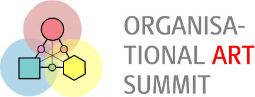

basekamp team > Projects (participant)
Organizational Art Summit

At ‘Organisational Art Summit’ 20 leading artists, practitioners and researchers meet to explore contemporary art projects where organisations and organisational issues are central themes in the art itself.
INVITATION TO ORGANISATIONAL ART SYMPOSIUM
The ‘Organisational Art Summit’ takes place on 25-28 of November in Liseleje, Denmark. The research consortium ‘The Creative Alliance’ at Learning Lab Denmark and a group of contemporary artists have teamed up to organise this international summit for twenty leading artists, practitioners and researchers, on what tentatively is called ‘Organisational Art’. With this art form professional artists are currently creating an important new field that works together with non-artistic organisations - companies, institutions, governments, communities and NGOs - to produce art, which is characterised as conceptual, socially engaged, trans-discursive and contextual. With their art projects they aim to advance and challenge both art and organisational practices.
••••••••••••••••••••••••••••••••••••••••••••••••••••••••••••••••••••••••
ORGANISATIONAL ART SYMPOSIUM
TIME: November 28, 2004; 10.30 to 1 p.m.
VENUE: Lisegaarden · Lisegaardsvej 10-12 · Liseleje · Denmark · <http://www.lisegaarden-kursuscenter.dk>
At the symposium, you will meet the 20 participants and learn more about the summit findings. The results will be published in a ‘Thin Book’ shortly after the summit. Let us know by email if you plan to attend the symposium, it is free and aimed at artists, researchers, critics, practitioners and media.
CONTACT // INFORMATION:
· Martin Ferro-Thomsen · Assistant Project
Manager · Learning Lab Denmark · <mailto:ferro@lld.dk>
· (+45) 3955 9939 · (+45) 2512 0570 (cell)
· Kent Hansen · Artist and Co-organiser · democratic
innovation · <mailto:kent@democratic-innovation.org> · (+45) 3555 8335 - (+45) 2264 0168 (cell)
LIST OF PARTICIPANTS AND THEIR AVAILABLE WEBSITES
· Aladin, CEO alkhemi, strategist,
social development practitioner, interdisciplinary artist, magician (UK) (<http://www.alkhemi.com> )
· Barbara Steveni, Cofounder and Director of O+I (formerly
APG), Artist (UK) (<http://www.oandi.org> )
· Barnaby Drabble, Artist/Curator (UK/SW) (<http://www.drabblesachs.org> )
· Carey Young, Artist (UK) (<http://www.careyyoung.com> )
· David Barry, Professor, The Creative Alliance /
LLD (DK/US)
· Gavin Wade, Artist/Curator (UK)
· Henrik Schrat, Artist (DE) (<http://www.henrikschrat.de> )
· Hilde Bollen, Consortium Coordinator, The Creative
Alliance / LLD (DK/B)
· Karolin Timm-Wachter, Siemens Arts Program (DE)
· Kent Hansen, Artist, democratic innovation (DK)
(<http://www.democratic-innovation.org> )
· Lise Autogena, Artist (UK/DK) (<http://www.autogena.org> )
· Lotte Darsø, Research Director, The Creative
Alliance / LLD (DK)
· Martin Ferro-Thomsen, Assistant Project Manager,
The Creative Alliance / LLD (DK)
· Teike Asselbergs, Artist, Orgacom (NE) (<http://www.orgacom.nl> )
· Tine Byrckel, Writer/Art critic, Information Newspaper
(DK)
· Patrick Mathieu, Consultant (FR)
· Philippe Mairesse, Artist, Acces Local (FR) (<http://www.acces-local.com> )
· Henrik Mayer, Artist, Reinigungsgesellschaft (DE)
(<http://www.reinigungsgesellschaft.de> )
· Scott Rigby, Collaborative Artist and Co-Director of
Basekamp (US) (<http://www.basekamp.com> )
· Susanne Kandrup, Entrepreneur etc., The Creative
Alliance / LLD (DK)
••••••••••••••••••••••••••••••••••••••••••••••••••••••••••••••••••••••••
This announcement is sent to basekamp email list subscribers. To be removed, please reply to this email with the heading ‘unsubscribe’.
For a schedule of events or additional press
information please call or send inquiries to:
Scott Rigby (215) 206-8176 <scott@basekamp.com>
Jen Goettner (215) 694-4749 <jen@basekamp.com>
<http://basekamp.com/>
BASEKAMP is a non commercial studio and exhibition space whose primary focus
is to participate in the creation, facilitation and promotion of large scale
collaborative projects by contemporary artists.
Philadelphia is an example of a city whose visual art-world is currently in
the process of self-definition. We have seen this as an opportunity to use
the city as a home base to invite domestic and international collaborative
groups in a joint experiment to develop new models of relations within overlapping
art communities.